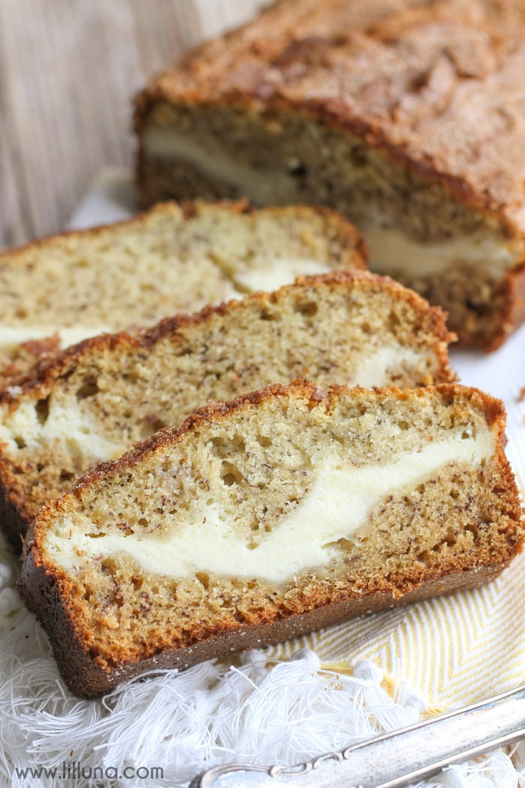

Cream Cheese Filled Banana Bread

Description
Moist banana bread filled with a cream cheese center.
Ingredients
Bread
- 1 large egg
- 1/2 cup light brown sugar
- 1/4 cup granulated sugar
- 1/4 cup liquid coconut oil, canola or vegetable oil
- 1/4 cup sour cream
- 2 tsp vanilla extract
- 1 cup mashed ripe bananas (about 2 bananas)
- 1 cup all-purpose flour
- 1/2 tsp baking powder
- 1/2 tsp baking soda
- pinch of salt
Cream Cheese Filling
- 1 large egg
- 4 oz cream cheese, softened
- 1/4 cup granulated sugar
- 3 T all-purpose flour
Steps
- Preheat oven to 350F, spray 9x5 inch loaf pan and set aside
- In a large bowl add egg, sugar, coconut oil, sour cream, vanilla, and whisk to combine
- Stir in the bananas
- Add flour, baking powder, baking soda, salt, and fold with spatula or gently with spoon until just combined.
- Turn about two-thirds of the batter out into the prepared pan, smoothing top lightly with spatula.
- Next make the cream cheese filling by whisking all ingredients in a large bowl.
- Evenly pour filling misture over bread, smoothing top lightly.
- Top with remaining bread batter and smooth.
- Bake 50 minutes or until top is domed, golden, and center is set.
- Let bread cool for 15 minutes in pan before turning out on a wire rack to cool completely before slicing.